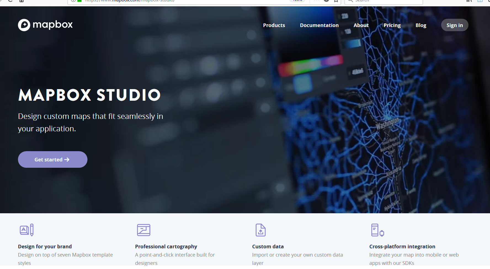
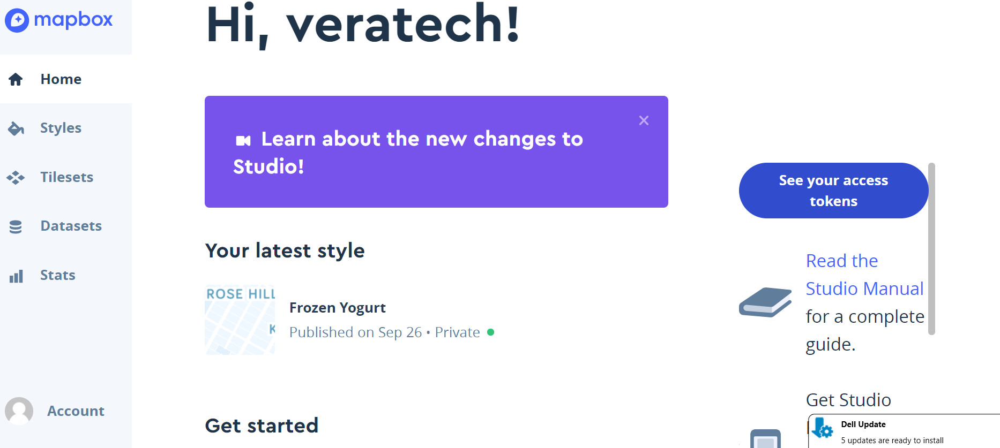
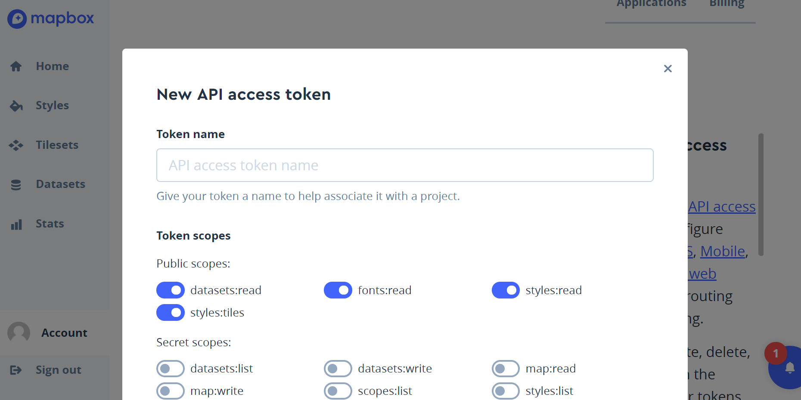
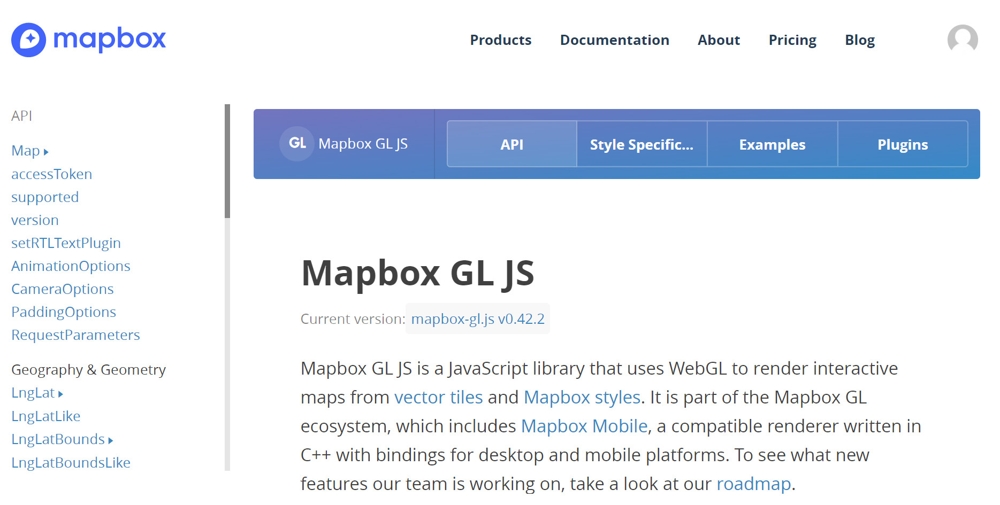
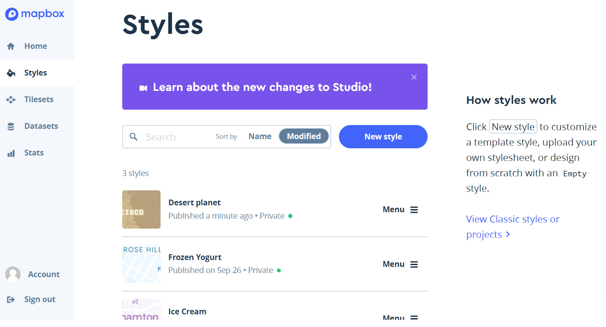

Mapbox API
Find Mapbox Studio

Mapbox API
Create an Account

Mapbox API
Create an Access Token

Mapbox API
Documentation for js developers

Mapbox Styles API
First make a basic map. See basic.html in the repo
Then choose a styles template and copy the preferred to your html.

Mabox API
Please Reference Templates via the Repo at: class/11-22-2017 mapbox - api
Grabbing Directions with the Directions Plugin - directions.html